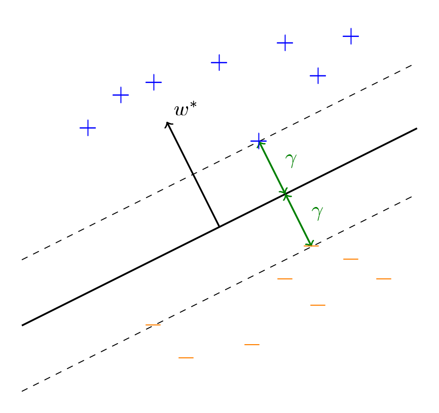
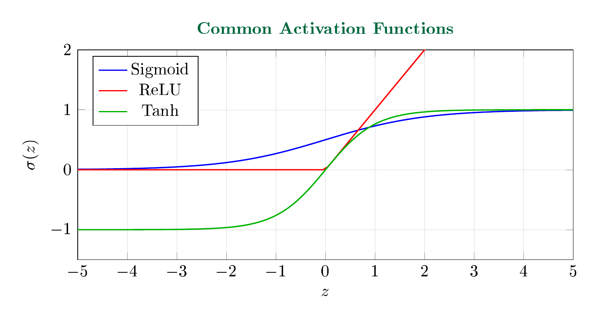
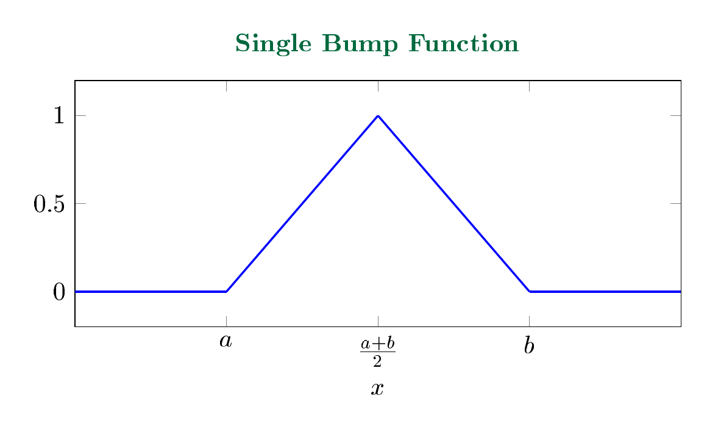
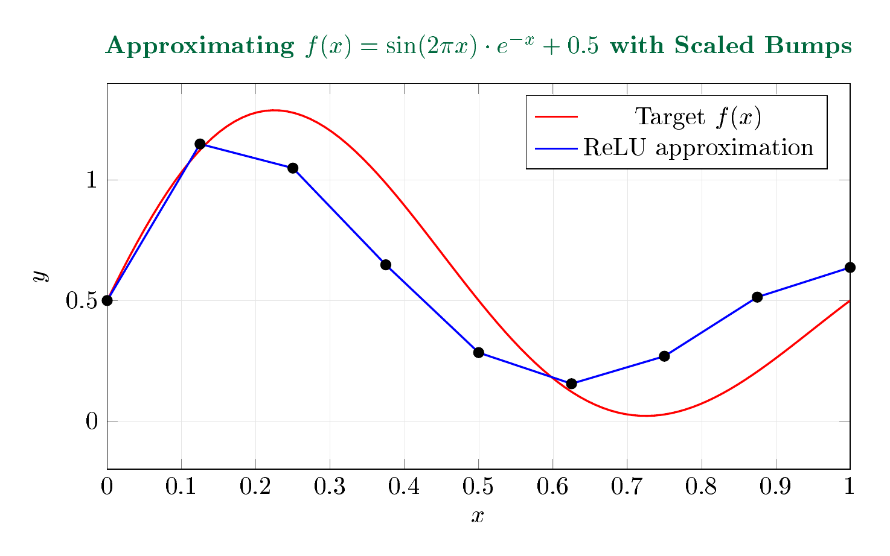
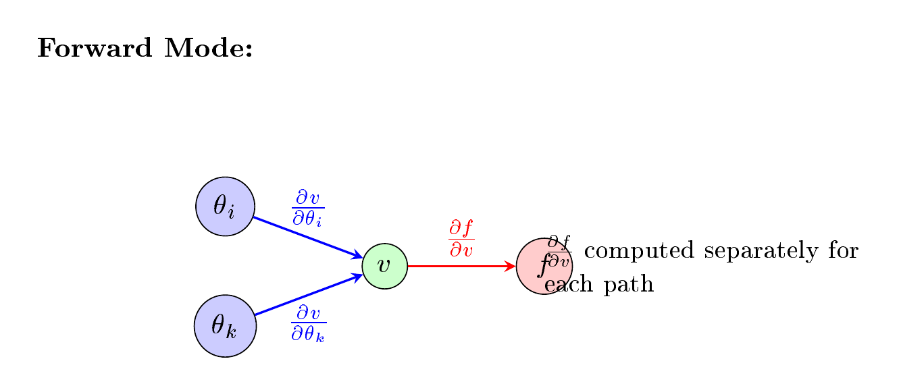

LebNet Tech Fellows — Detailed Notes
Binary classification is the task of classifying data into two categories. Given data with labels, we seek to learn the classifier. Inspired by neurons in the brain, the Perceptron algorithm learns a binary classifier from labeled data.
Consider labeled data $(x, l(x))$, where $x \in X \subset \mathbb{R}^n$, $l(x) \in \{1, -1\}$. Each data point is labeled as:
$$l(x) = \text{sign}(\langle w^*, x \rangle) = \text{sign}\left(\sum_{i=1}^{n} w_i^* x_i\right)$$Here $w^* \in \mathbb{R}^n$ is the unknown normal vector to a separating hyperplane. We assume that $\|w^*\| = 1$ and $\|x\| \leq 1$ for all data points.
The margin for $w^*$ is defined as:
$$\gamma := \min_{x \in D} |\langle w^*, x \rangle|$$This implies that for any $x$ with label $l(x) = 1$, we have $\langle w^*, x \rangle \geq \gamma$; for any $x$ with label $l(x) = -1$, we have $\langle w^*, x \rangle \leq -\gamma$.

Separating hyperplane with margin $\gamma$, normal vector $w^*$, and positive/negative data points.
The weight vector $w$ has a fundamental geometric meaning: it is orthogonal to the separating hyperplane.
The weight vector $w$ is normal to the decision boundary $H = \{x : \langle w, x \rangle = 0\}$.
Let $x_1, x_2 \in H$ be any two points on the hyperplane. Then:
$$\langle w, x_1 \rangle = 0 \quad \text{and} \quad \langle w, x_2 \rangle = 0$$Subtracting: $\langle w, x_1 - x_2 \rangle = 0$. Since $x_1 - x_2$ is an arbitrary vector lying in $H$, we conclude that $w \perp H$. ∎
The signed distance from a point $x$ to the hyperplane $H = \{z : \langle w, z \rangle = 0\}$ is:
$$\text{dist}(x, H) = \frac{\langle w, x \rangle}{\|w\|}$$Let $x_0 \in H$ be any point on the hyperplane, so $\langle w, x_0 \rangle = 0$. The signed distance is the projection of $(x - x_0)$ onto the unit normal $\frac{w}{\|w\|}$:
$$\begin{aligned} \text{dist}(x, H) &= \langle x - x_0, \frac{w}{\|w\|} \rangle \\[6pt] &= \frac{\langle x, w \rangle - \langle x_0, w \rangle}{\|w\|} \\[6pt] &= \frac{\langle w, x \rangle - 0}{\|w\|} = \frac{\langle w, x \rangle}{\|w\|} \end{aligned}$$∎
When we update the weight vector $w \leftarrow w + l(x)x$, we are tilting the hyperplane toward the misclassified point.
If $(x, l(x))$ is misclassified under $w$, then after the update $\tilde{w} = w + l(x)x$:
$$l(x) \langle \tilde{w}, x \rangle > l(x) \langle w, x \rangle$$We compute:
$$\begin{aligned} l(x) \langle \tilde{w}, x \rangle &= l(x) \langle w + l(x)x, x \rangle \\[6pt] &= l(x) \langle w, x \rangle + l(x)^2 \|x\|^2 \\[6pt] &= l(x) \langle w, x \rangle + \|x\|^2 \end{aligned}$$Since $\|x\|^2 > 0$, the improvement is strictly positive. ∎
Input: Labeled data $\{(x_i, l(x_i))\}_{i=1}^n$ with $l(x_i) \in \{-1, +1\}$
Output: Weight vector $w$
The number of mistakes made by the Perceptron Algorithm on any input sequence is at most $1/\gamma^2$.
Consider the potential function $\frac{\langle w, w^* \rangle}{\|w\|}$, starting at $0$. Whenever the algorithm makes a mistake, we update $\tilde{w} := w + l(x)x$. We analyze the numerator and denominator separately.
Step 1: Lower bound on the numerator.
$$\begin{aligned} \langle \tilde{w}, w^* \rangle &= \langle w + l(x)x, w^* \rangle \\[6pt] &= \langle w, w^* \rangle + l(x)\langle x, w^* \rangle \\[6pt] &\geq \langle w, w^* \rangle + \gamma \end{aligned}$$The last inequality follows from the definition of margin $\gamma$: since $l(x) = \text{sign}(\langle w^*, x \rangle)$, we have $l(x)\langle x, w^* \rangle = |\langle x, w^* \rangle| \geq \gamma$.
Step 2: Upper bound on the denominator.
$$\begin{aligned} \|\tilde{w}\|^2 &= \langle \tilde{w}, \tilde{w} \rangle \\[6pt] &= \langle w + l(x)x, w + l(x)x \rangle \\[6pt] &= \langle w, w \rangle + \langle x, x \rangle + 2l(x)\langle w, x \rangle \end{aligned}$$Since $x$ is incorrectly predicted by $w$, we know $l(x) \neq \text{sign}(\langle w, x \rangle)$. This implies that $l(x)\langle w, x \rangle \leq 0$. Also, we assume that $\|x\| \leq 1$. Therefore:
$$\|\tilde{w}\|^2 \leq \langle w, w \rangle + \langle x, x \rangle \leq \|w\|^2 + 1$$Step 3: Induction after $T$ mistakes.
By induction, after $T$ mistakes:
Step 4: Combining via Cauchy-Schwarz.
By the Cauchy-Schwarz inequality:
$$|\langle \tilde{w}, w^* \rangle| \leq \|\tilde{w}\| \|w^*\| = \|\tilde{w}\|$$since $\|w^*\| = 1$. This implies that $\frac{\langle \tilde{w}, w^* \rangle}{\|\tilde{w}\|} \leq 1$ at all time steps. Therefore:
$$1 \geq \frac{\langle \tilde{w}, w^* \rangle}{\|\tilde{w}\|} \geq \frac{\gamma T}{\sqrt{T}} = \gamma\sqrt{T}$$It follows that:
$$\boxed{T \leq \frac{1}{\gamma^2}}$$∎
Theorem 3.1 shows that the number of mistakes is bounded by $1/\gamma^2$. However, when the margin is tiny, for instance $\gamma \sim 1/2^n$, the number of mistakes can be as large as $2^{O(n)}$, which is not polynomial with respect to the input dimension $n$.
We construct a dataset and show that for any given order, the Perceptron algorithm needs to see at least $2^{O(n)}$ examples before reaching the truth.
For each data point $x^{(i)} \in \mathbb{R}^n$ with $i$ non-zero entries, we construct:
| $x$ | $l(x)$ | |
|---|---|---|
| $x^{(1)}$ | $(1, 0, 0, 0, \cdots, 0)$ | $+1$ |
| $x^{(2)}$ | $(1, -1, 0, 0, \cdots, 0)$ | $-1$ |
| $x^{(3)}$ | $(-1, -1, 1, 0, \cdots, 0)$ | $+1$ |
| $x^{(4)}$ | $(1, 1, 1, -1, 0, \cdots, 0)$ | $-1$ |
| $\vdots$ | $\vdots$ | $\vdots$ |
| $x^{(i)}$ | $((-1)^i, \cdots, (-1)^i, (-1)^{i+1}, 0, \cdots, 0)$ | $(-1)^{i+1}$ |
For a unit vector $w^* \in \mathbb{R}^n$ that classifies the data above correctly, its $i$-th coordinate satisfies $w^*_i \geq 2^{i-1}$.
By rescaling $w^*$, we can assume WLOG that the margin is $\gamma = 1$.
Base case: Since $l(x^{(1)}) = 1$, we have $\langle w^*, x^{(1)} \rangle \geq 1$. This gives $w^*_1 \geq 1 = 2^0$.
Inductive step: Similarly, we have $\langle w^*, x^{(2)} \rangle \leq -1$, which gives $w^*_1 - w^*_2 \leq -1$, and thus $w^*_2 \geq w^*_1 + 1$.
More generally, for odd $i$:
$$\langle w^*, x^{(i)} \rangle = -\sum_{j=1}^{i-1} w^*_j + w^*_i \geq 1 \quad \Rightarrow \quad w^*_i \geq \sum_{j=1}^{i-1} w^*_j + 1$$For even $i$:
$$\langle w^*, x^{(i)} \rangle = \sum_{j=1}^{i-1} w^*_j - w^*_i \leq -1 \quad \Rightarrow \quad w^*_i \geq \sum_{j=1}^{i-1} w^*_j + 1$$Therefore, $w^*_1 \geq 1$ and for each $i \geq 2$, $w^*_i \geq \sum_{j=1}^{i-1} w^*_j + 1$. By induction, for any $i \in [n]$:
$$w^*_i \geq 2^{i-1}$$∎
To achieve the correct classifier $w^*$, the Perceptron algorithm needs at least $2^{n-1}$ examples with mistakes.
In each update step of the Perceptron algorithm, we set $w \leftarrow w + l(x)x$. By the construction of the data above, the absolute value of the change of $w$ is at most one in each coordinate.
By Lemma 4.1, $w^*_n \geq 2^{n-1}$. Therefore, we need at least $2^{n-1}$ update steps to reach the $n$-th coordinate of $w^*$. ∎
In the previous section, we saw that the Perceptron algorithm cannot be polynomial when the margin is tiny. Here we consider a setting where we only care about data points that are "far" from the margin.
Specifically, given a parameter $\sigma > 0$, we would like to find $w$ such that $\text{sign}(\langle w, x \rangle)$ is the correct label for all $x$ satisfying:
$$|\cos(w, x)| := \frac{|\langle w, x \rangle|}{\|w\| \|x\|} \geq \sigma$$Input: Labeled data, parameter $\sigma > 0$
Output: Weight vector $w$
With probability at least $1/8$, the number of mistakes made by the Modified Perceptron Algorithm is at most $\frac{\ln n}{\sigma^2}$.
Consider the potential function $\cos(w, w^*) = \frac{\langle w, w^* \rangle}{\|w\| \|w^*\|}$.
Step 1: Initialization.
By random initialization, with probability at least $1/8$, we have $\langle w, w^* \rangle \geq 1/\sqrt{n}$.
Step 2: Numerator analysis.
For each update step $w \to \tilde{w}$, since $\text{sign}(\langle w, x \rangle) \neq \text{sign}(\langle w^*, x \rangle)$:
$$\langle \tilde{w}, w^* \rangle = \langle w, w^* \rangle - \langle w, \bar{x} \rangle \langle w^*, \bar{x} \rangle \geq \langle w, w^* \rangle$$The inequality holds because $\langle w, \bar{x} \rangle$ and $\langle w^*, \bar{x} \rangle$ have opposite signs.
Step 3: Denominator analysis.
Since $|\cos(w, \bar{x})| = \frac{|\langle w, \bar{x} \rangle|}{\|w\|} \geq \sigma$, we have $|\langle w, \bar{x} \rangle| \geq \sigma\|w\|$.
$$\begin{aligned} \|\tilde{w}\|^2 &= \|w\|^2 + \langle w, \bar{x} \rangle^2 \|\bar{x}\|^2 - 2\langle w, \bar{x} \rangle^2 \\[6pt] &= \|w\|^2 - \langle w, \bar{x} \rangle^2 \\[6pt] &\leq \|w\|^2(1 - \sigma^2) \end{aligned}$$Step 4: Combining after $T$ steps.
After $T$ steps:
$$1 \geq \cos(w, w^*) \geq \frac{1}{\sqrt{n}} \cdot \frac{1}{(1-\sigma^2)^{T/2}}$$Therefore:
$$(1 - \sigma^2)^{T/2} \geq \frac{1}{\sqrt{n}}$$And thus:
$$\left(\frac{1}{1-\sigma^2}\right)^T \leq n$$Taking logarithms:
$$T \leq \frac{\ln n}{\ln(1/(1-\sigma^2))} \leq \frac{\ln n}{\sigma^2}$$where in the last inequality we used $1 + x \leq e^x$, which implies:
$$(1 - \sigma^2) \leq e^{-\sigma^2} \implies \frac{1}{1-\sigma^2} \geq e^{\sigma^2} \implies \ln\left(\frac{1}{1-\sigma^2}\right) \geq \sigma^2$$∎
By running the Modified Perceptron Algorithm repeatedly for $\log_{4/3}(1/\delta)$ rounds, with probability at least $1 - \delta$, the total number of mistakes is at most:
$$O\left(\frac{\log n \cdot \log(1/\delta)}{\sigma^2}\right)$$By Theorem 5.1, the probability that one round fails is $7/8 \leq 3/4$. The probability that all $\log_{4/3}(1/\delta)$ rounds fail is:
$$(3/4)^{\log_{4/3}(1/\delta)} = \delta$$So the algorithm succeeds with probability $1 - \delta$. The total number of mistakes is at most:
$$\log_{4/3}(1/\delta) \cdot \frac{\ln n}{\sigma^2} = O\left(\frac{\log n \cdot \log(1/\delta)}{\sigma^2}\right)$$∎
The perceptron finds a linear separator. For nonlinear classification boundaries, we can map data to a higher-dimensional feature space.
Consider the label function $l(x) = \text{sign}(\|x - x_0\|^2 - r^2)$, which labels points outside a ball $B(x_0, r)$ as $+1$ and inside as $-1$. More generally:
$$l(x) = \text{sign}(x^\top A x - b)$$For $l(x) = \text{sign}(x_1^2 + x_2^2 - 3x_1 x_2)$ with $x \in \mathbb{R}^2$, we can reduce to the linear case by mapping:
$$(x_1, x_2) \mapsto (x_1^2, x_2^2, x_1 x_2, x_1, x_2)$$Then we get a linear classifier in the new coordinates with $w^* = (1, 1, -3, 0, 0)$.
The Perceptron finds some separating hyperplane. Support Vector Machines (SVMs) find the maximum margin hyperplane.
By rescaling, we can set $\gamma \|w\| = 1$, yielding the equivalent quadratic program:
$$\begin{aligned} \min_{w, b} \quad & \frac{1}{2}\|w\|^2 \\ \text{s.t.} \quad & y_i(\langle w, x_i \rangle + b) \geq 1 \quad \forall i \end{aligned}$$For non-separable data, we introduce slack variables $\xi_i \geq 0$:
$$\begin{aligned} \min_{w, b, \xi} \quad & \frac{1}{2}\|w\|^2 + C \sum_{i=1}^{n} \xi_i \\ \text{s.t.} \quad & y_i(\langle w, x_i \rangle + b) \geq 1 - \xi_i \quad \forall i \\ & \xi_i \geq 0 \quad \forall i \end{aligned}$$The parameter $C > 0$ controls the trade-off between margin maximization and classification error. The term $\|w\|^2$ is the regularization; note that $\gamma_w = \min_x \frac{|\langle w, x \rangle|}{\|w\|}$, so $\|w\|^2 \propto 1/\gamma_w^2$.
The number of mistakes made by the perceptron is bounded by:
$$M \leq \frac{1}{\gamma_w^2} + 2\sum_i \zeta_i$$where $\zeta_i$ are the slack variables from the soft-margin SVM.
The Lagrangian is:
$$\mathcal{L}(w, b, \xi, \alpha, \mu) = \frac{1}{2}\|w\|^2 + C\sum_i \xi_i - \sum_i \alpha_i [y_i(\langle w, x_i \rangle + b) - 1 + \xi_i] - \sum_i \mu_i \xi_i$$Taking derivatives with respect to the primal variables and substituting yields the dual problem:
$$\begin{aligned} \max_{\alpha} \quad & \sum_{i=1}^{n} \alpha_i - \frac{1}{2} \sum_{i,j} \alpha_i \alpha_j y_i y_j \langle x_i, x_j \rangle \\ \text{s.t.} \quad & 0 \leq \alpha_i \leq C \quad \forall i \\ & \sum_{i=1}^{n} \alpha_i y_i = 0 \end{aligned}$$Key observation: The solution depends on the data only through inner products $\langle x_i, x_j \rangle$.
Points $x_i$ with $\alpha_i > 0$ are called support vectors. They are the points closest to (or violating) the decision boundary.
The optimal weight vector is: $w^* = \sum_{i=1}^{n} \alpha_i y_i x_i$
Since the SVM dual depends only on inner products, we can replace $\langle x_i, x_j \rangle$ with a kernel function $K(x_i, x_j)$.
A function $K: \mathcal{X} \times \mathcal{X} \to \mathbb{R}$ is a valid kernel if there exists a feature map $\phi: \mathcal{X} \to \mathcal{H}$ (into some Hilbert space) such that:
$$K(x, z) = \langle \phi(x), \phi(z) \rangle_{\mathcal{H}}$$A function $K$ is a valid kernel if and only if it is symmetric and positive semi-definite: for any $\{x_1, \ldots, x_n\} \subset \mathcal{X}$, the Gram matrix $K_{ij} = K(x_i, x_j)$ is positive semi-definite.
| Kernel | Definition | Feature Space |
|---|---|---|
| Linear | $K(x, z) = \langle x, z \rangle$ | $\mathbb{R}^d$ |
| Polynomial | $K(x, z) = (\langle x, z \rangle + c)^p$ | Monomials up to degree $p$ |
| RBF/Gaussian | $K(x, z) = \exp(-\gamma\|x - z\|^2)$ | Infinite-dimensional |
For $x = (x_1, x_2)$, $z = (z_1, z_2)$, and $K(x, z) = (\langle x, z \rangle)^2$:
$$\begin{aligned} K(x, z) &= (x_1 z_1 + x_2 z_2)^2 \\[6pt] &= x_1^2 z_1^2 + 2x_1 x_2 z_1 z_2 + x_2^2 z_2^2 \end{aligned}$$This equals $\langle \phi(x), \phi(z) \rangle$ where $\phi(x) = (x_1^2, \sqrt{2}x_1 x_2, x_2^2) \in \mathbb{R}^3$.
To learn a classifier in feature space $\phi(x)$, we run the perceptron on $\phi(x)$. The weight vector has the form $w = \sum_{i=1}^{m} \ell(x^{(i)})\phi(x^{(i)})$, so predictions depend only on inner products:
$$\langle w, \phi(x) \rangle = \sum_{i=1}^{m} \ell(x^{(i)}) \langle \phi(x^{(i)}), \phi(x) \rangle = \sum_{i=1}^{m} \ell(x^{(i)}) K(x^{(i)}, x)$$Input: Kernel function $K$, labeled data
Output: Set $M$ of mistake points
The algorithm never explicitly computes $\phi(x)$; it only evaluates the kernel $K$.
If $f(x) = Ax + b$ and $g(z) = Cz + d$, then their composition is linear:
$$(g \circ f)(x) = C(Ax + b) + d = (CA)x + (Cb + d)$$Direct computation. The composition is affine with matrix $CA$ and bias $Cb + d$. ∎
A neural network with only linear activations collapses to a single linear transformation, regardless of depth.
Stacking layers without nonlinearities provides no additional representational power. A 100-layer linear network is equivalent to a single-layer network.
To break the linear limitation, we introduce activation functions $\sigma: \mathbb{R} \to \mathbb{R}$ applied element-wise:
$$h^{(l)} = \sigma(W^{(l)} h^{(l-1)} + b^{(l)})$$| Name | Definition | Derivative |
|---|---|---|
| Sigmoid | $\sigma(z) = \frac{1}{1+e^{-z}}$ | $\sigma(z)(1-\sigma(z))$ |
| Tanh | $\tanh(z) = \frac{e^z - e^{-z}}{e^z + e^{-z}}$ | $1 - \tanh^2(z)$ |
| ReLU | $\text{ReLU}(z) = \max(0, z)$ | $\mathbf{1}_{z > 0}$ |
| Leaky ReLU | $\max(\alpha z, z)$ | $\alpha \cdot \mathbf{1}_{z \leq 0} + \mathbf{1}_{z > 0}$ |

Common activation functions: Sigmoid, ReLU, and Tanh.
Let $\sigma: \mathbb{R} \to \mathbb{R}$ be any continuous, non-polynomial activation function. For any continuous function $f: [0,1]^d \to \mathbb{R}$ and any $\varepsilon > 0$, there exists a single-hidden-layer neural network
$$g(x) = \sum_{j=1}^{N} c_j \sigma(\langle w_j, x \rangle + b_j)$$such that $\sup_{x \in [0,1]^d} |f(x) - g(x)| < \varepsilon$.
We give an elementary constructive proof using ReLU activations.
For any $\epsilon > 0$, define:
$$h_\epsilon(x) = \frac{1}{\epsilon}\left[\text{ReLU}(x - a) - \text{ReLU}(x - a - \epsilon)\right]$$Then $h_\epsilon \to \mathbf{1}_{x \geq a}$ pointwise as $\epsilon \to 0^+$.
Case 1: $x < a$. Both arguments are negative, so $h_\epsilon(x) = 0$.
Case 2: $a \leq x < a + \epsilon$. Only the first ReLU is active:
$$h_\epsilon(x) = \frac{1}{\epsilon}(x - a) \in [0, 1)$$Case 3: $x \geq a + \epsilon$. Both ReLUs are active:
$$h_\epsilon(x) = \frac{1}{\epsilon}[(x-a) - (x-a-\epsilon)] = \frac{\epsilon}{\epsilon} = 1$$As $\epsilon \to 0^+$, the transition region $[a, a+\epsilon)$ shrinks to a point, giving $\mathbf{1}_{x \geq a}$. ∎
A "bump" function (or "tent" function) on $[a, b]$ can be constructed:
$$\text{bump}_{[a,b]}(x) = \text{ReLU}(x-a) - 2\cdot\text{ReLU}\left(x - \frac{a+b}{2}\right) + \text{ReLU}(x-b)$$
Single bump function constructed from three ReLU units.
By scaling and shifting bump functions, we can approximate any continuous function. Each bump is scaled to match the function's value at that region:

Approximating $f(x) = \sin(2\pi x) \cdot e^{-x} + 0.5$ with scaled ReLU bumps.
The approximation improves as we use more bump functions (finer partition). By uniform continuity, for any $\varepsilon > 0$, a sufficiently fine partition yields $\|f - \hat{f}\|_\infty < \varepsilon$.
Any continuous $f: [0,1] \to \mathbb{R}$ can be approximated by a finite ReLU network.
Step 1: Partition. Divide $[0,1]$ into $n$ intervals $[x_{k-1}, x_k]$ of width $1/n$, where $x_k = k/n$.
Step 2: Piecewise linear approximation. Construct $\hat{f}$ by connecting the points $(x_k, f(x_k))$ with line segments. This is a piecewise linear function.
Step 3: ReLU representation. Each piecewise linear function can be written using ReLU "hinges":
$$\hat{f}(x) = f(0) + s_0 x + \sum_{k=1}^{n-1} (s_k - s_{k-1}) \cdot \text{ReLU}(x - x_k)$$where $s_k = \frac{f(x_{k+1}) - f(x_k)}{x_{k+1} - x_k}$ is the slope of the $k$-th piece.
Step 4: Approximation error. By uniform continuity of $f$ on $[0,1]$, for any $\varepsilon > 0$, there exists $\delta > 0$ such that $|x - y| < \delta \implies |f(x) - f(y)| < \varepsilon$. Choosing $n > 1/\delta$:
$$\|f - \hat{f}\|_\infty \leq \varepsilon$$Since $\hat{f}$ is a ReLU network with $n$ hidden units, the result follows. ∎
A function $\sigma: \mathbb{R} \to \mathbb{R}$ is discriminatory if for any finite signed Borel measure $\mu$ on $[0,1]^d$:
$$\int_{[0,1]^d} \sigma(\langle w, x \rangle + b) \, d\mu(x) = 0 \quad \forall w \in \mathbb{R}^d, b \in \mathbb{R} \implies \mu = 0$$If $\sigma$ is continuous and discriminatory, then the span
$$\mathcal{S} = \text{span}\{\sigma(\langle w, x \rangle + b) : w \in \mathbb{R}^d, b \in \mathbb{R}\}$$is dense in $C([0,1]^d)$ under the supremum norm.
Suppose for contradiction that $\overline{\mathcal{S}} \neq C([0,1]^d)$.
Step 1: Apply Hahn-Banach. By the Hahn-Banach theorem, there exists a non-zero bounded linear functional $L: C([0,1]^d) \to \mathbb{R}$ that vanishes on $\mathcal{S}$.
Step 2: Apply Riesz Representation. By the Riesz representation theorem, there exists a non-zero finite signed Borel measure $\mu$ on $[0,1]^d$ such that:
$$L(g) = \int_{[0,1]^d} g(x) \, d\mu(x) \quad \forall g \in C([0,1]^d)$$Step 3: Contradiction. Since $L$ vanishes on $\mathcal{S}$:
$$\int_{[0,1]^d} \sigma(\langle w, x \rangle + b) \, d\mu(x) = 0 \quad \forall w, b$$But $\sigma$ is discriminatory, so $\mu = 0$, contradicting the fact that $\mu \neq 0$. ∎
A function $\sigma$ is sigmoidal if $\lim_{t \to -\infty} \sigma(t) = 0$ and $\lim_{t \to +\infty} \sigma(t) = 1$. Sigmoidal functions are discriminatory.
Define $\sigma_{\lambda,\theta}(x) = \sigma(\lambda(\langle w, x \rangle + b) + \theta)$. As $\lambda \to \infty$:
$$\sigma_{\lambda,\theta}(x) \to \begin{cases} 1 & \text{if } \langle w, x \rangle + b > 0 \\ \sigma(\theta) & \text{if } \langle w, x \rangle + b = 0 \\ 0 & \text{if } \langle w, x \rangle + b < 0 \end{cases}$$By the dominated convergence theorem (since $\sigma$ is bounded):
$$\int \sigma_{\lambda,\theta} \, d\mu \to \int \mathbf{1}_{H^+_{w,b}} \, d\mu + \sigma(\theta) \cdot \mu(H_{w,b})$$where $H^+_{w,b} = \{x : \langle w, x \rangle + b > 0\}$ is the open half-space and $H_{w,b}$ is the hyperplane.
If $\int \sigma(\langle w, x \rangle + b) \, d\mu = 0$ for all $w, b$, then varying $\theta$ shows $\mu(H^+_{w,b}) = 0$ for all half-spaces. Since half-spaces generate the Borel $\sigma$-algebra, $\mu = 0$. ∎
The ReLU function $\text{ReLU}(z) = \max(0, z)$ is discriminatory.
Consider the function:
$$f(x) = \text{ReLU}(\langle w, x \rangle + b_1) - \text{ReLU}(\langle w, x \rangle + b_2)$$for $b_1 > b_2$. This is a bounded, continuous function. As $\langle w, x \rangle \to +\infty$, $f(x) \to b_1 - b_2$ (constant). As $\langle w, x \rangle \to -\infty$, $f(x) \to 0$.
With appropriate scaling and choice of $b_1, b_2$, the function $\frac{1}{b_1 - b_2}f(x)$ is sigmoidal. Therefore, if:
$$\int \text{ReLU}(\langle w, x \rangle + b) \, d\mu(x) = 0 \quad \forall w, b$$then subtracting two such integrals:
$$\int f(x) \, d\mu(x) = 0 \quad \forall w, b_1, b_2$$Since we can construct sigmoidal functions from differences of ReLUs, and sigmoidal functions are discriminatory, it follows that $\mu = 0$. ∎
Any $f \in L^2([0, 2\pi])$ can be written as:
$$f(x) = \sum_{n=-\infty}^{\infty} c_n e^{inx} = a_0 + \sum_{n=1}^{\infty} (a_n \cos(nx) + b_n \sin(nx))$$converging in $L^2$.
Connection to Neural Networks:
The functions $\sin$ and $\cos$ can be approximated by neural networks with smooth activations (e.g., tanh, sigmoid). Since any continuous periodic function is a uniform limit of trigonometric polynomials (by Weierstrass approximation), and these can be approximated by neural networks, we obtain UAT.
If $\mathcal{A} \subset C(K)$ is an algebra (closed under pointwise multiplication and linear combinations) that:
Then $\overline{\mathcal{A}} = C(K)$.
Application: Neural networks with analytic activations (like sigmoid) can approximate polynomials of any degree (since sigmoid is analytic, products and compositions can approximate any polynomial via Taylor series). By Taylor's theorem, this suffices to approximate any smooth function locally. Patching together local approximations yields global approximation.
Given a neural network $f_\theta: \mathbb{R}^d \to \mathbb{R}^k$ parameterized by weights $\theta$, and training data $\{(x_i, y_i)\}_{i=1}^{n}$, we minimize the empirical risk:
$$\mathcal{L}(\theta) = \frac{1}{n} \sum_{i=1}^{n} \ell(f_\theta(x_i), y_i)$$| Task | Loss Function | Formula |
|---|---|---|
| Regression | Mean Squared Error | $\ell(\hat{y}, y) = \frac{1}{2}\|\hat{y} - y\|^2$ |
| Binary Classification | Cross-Entropy | $\ell(\hat{y}, y) = -y\log(\hat{y}) - (1-y)\log(1-\hat{y})$ |
| Multi-class | Softmax Cross-Entropy | $\ell(\hat{y}, y) = -\log(\text{softmax}(\hat{y})_y)$ |
Input: Initial weights $\theta_0$, learning rate $\eta$, iterations $T$
Per-iteration cost: $O(n)$ gradient computations (one per data point).
Key Idea: Replace the full gradient with an unbiased estimator using a random sample.
The stochastic gradient is an unbiased estimator:
$$\E_{i}[\nabla \ell(f_\theta(x_i), y_i)] = \nabla \mathcal{L}(\theta)$$∎
A differentiable function $f$ is $L$-smooth if its gradient is $L$-Lipschitz:
$$\|\nabla f(x) - \nabla f(y)\| \leq L\|x - y\| \quad \forall x, y$$Equivalently, for all $x, y$:
$$f(y) \leq f(x) + \langle \nabla f(x), y - x \rangle + \frac{L}{2}\|y - x\|^2$$A differentiable function $f$ is $\mu$-strongly convex if:
$$f(y) \geq f(x) + \langle \nabla f(x), y - x \rangle + \frac{\mu}{2}\|y - x\|^2 \quad \forall x, y$$If $\mathcal{L}$ is $\mu$-strongly convex and $L$-smooth, then gradient descent with $\eta = 1/L$ satisfies:
$$\|\theta_t - \theta^*\|^2 \leq \left(1 - \frac{\mu}{L}\right)^t \|\theta_0 - \theta^*\|^2$$The convergence rate is linear with rate depending on the condition number $\kappa = L/\mu$.
Let $\theta^* = \arg\min \mathcal{L}(\theta)$. By strong convexity applied at $\theta_t$ and $\theta^*$:
$$\mathcal{L}(\theta^*) \geq \mathcal{L}(\theta_t) + \langle \nabla \mathcal{L}(\theta_t), \theta^* - \theta_t \rangle + \frac{\mu}{2}\|\theta^* - \theta_t\|^2$$Since $\theta^*$ is optimal, $\mathcal{L}(\theta_t) \geq \mathcal{L}(\theta^*)$. Rearranging:
$$\langle \nabla \mathcal{L}(\theta_t), \theta_t - \theta^* \rangle \geq \frac{\mu}{2}\|\theta_t - \theta^*\|^2$$By $L$-smoothness, with $\eta = 1/L$:
$$\begin{aligned} \|\theta_{t+1} - \theta^*\|^2 &= \|\theta_t - \eta\nabla\mathcal{L}(\theta_t) - \theta^*\|^2 \\[6pt] &= \|\theta_t - \theta^*\|^2 - 2\eta\langle \nabla\mathcal{L}(\theta_t), \theta_t - \theta^*\rangle + \eta^2\|\nabla\mathcal{L}(\theta_t)\|^2 \\[6pt] &\leq \|\theta_t - \theta^*\|^2 - 2\eta\cdot\frac{\mu}{2}\|\theta_t - \theta^*\|^2 + \eta^2 L^2 \|\theta_t - \theta^*\|^2 \end{aligned}$$Using $\|\nabla\mathcal{L}(\theta_t)\| \leq L\|\theta_t - \theta^*\|$ (by $L$-smoothness and $\nabla\mathcal{L}(\theta^*) = 0$):
$$\|\theta_{t+1} - \theta^*\|^2 \leq (1 - \eta\mu + \eta^2 L^2)\|\theta_t - \theta^*\|^2$$With $\eta = 1/L$:
$$\|\theta_{t+1} - \theta^*\|^2 \leq \left(1 - \frac{\mu}{L}\right)\|\theta_t - \theta^*\|^2$$∎
Under $L$-smoothness and bounded variance $\E[\|\nabla \ell_i - \nabla \mathcal{L}\|^2] \leq \sigma^2$, SGD with constant step size $\eta = \frac{1}{L\sqrt{T}}$ satisfies:
$$\frac{1}{T}\sum_{t=0}^{T-1}\E[\|\nabla\mathcal{L}(\theta_t)\|^2] = O\left(\frac{L(\mathcal{L}(\theta_0) - \mathcal{L}^*)}{\sqrt{T}} + \frac{\sigma}{\sqrt{T}}\right)$$By $L$-smoothness:
$$\mathcal{L}(\theta_{t+1}) \leq \mathcal{L}(\theta_t) + \langle \nabla\mathcal{L}(\theta_t), \theta_{t+1} - \theta_t \rangle + \frac{L}{2}\|\theta_{t+1} - \theta_t\|^2$$Substituting $\theta_{t+1} - \theta_t = -\eta g_t$ where $g_t$ is the stochastic gradient:
$$\mathcal{L}(\theta_{t+1}) \leq \mathcal{L}(\theta_t) - \eta\langle \nabla\mathcal{L}(\theta_t), g_t \rangle + \frac{L\eta^2}{2}\|g_t\|^2$$Taking expectations conditioned on $\theta_t$, using $\E[g_t | \theta_t] = \nabla\mathcal{L}(\theta_t)$ and $\E[\|g_t\|^2 | \theta_t] = \|\nabla\mathcal{L}(\theta_t)\|^2 + \sigma^2$:
$$\E[\mathcal{L}(\theta_{t+1}) | \theta_t] \leq \mathcal{L}(\theta_t) - \eta\|\nabla\mathcal{L}(\theta_t)\|^2 + \frac{L\eta^2}{2}(\|\nabla\mathcal{L}(\theta_t)\|^2 + \sigma^2)$$Rearranging:
$$\|\nabla\mathcal{L}(\theta_t)\|^2 \leq \frac{1}{\eta(1 - L\eta/2)}\left[\mathcal{L}(\theta_t) - \E[\mathcal{L}(\theta_{t+1}) | \theta_t]\right] + \frac{L\eta\sigma^2}{2(1 - L\eta/2)}$$Taking full expectations and summing from $t = 0$ to $T-1$:
$$\sum_{t=0}^{T-1} \E[\|\nabla\mathcal{L}(\theta_t)\|^2] \leq \frac{\mathcal{L}(\theta_0) - \mathcal{L}^*}{\eta(1 - L\eta/2)} + \frac{TL\eta\sigma^2}{2(1 - L\eta/2)}$$Setting $\eta = \frac{1}{L\sqrt{T}}$ (which satisfies $L\eta/2 = \frac{1}{2\sqrt{T}} < 1/2$ for $T \geq 1$):
$$\frac{1}{T}\sum_{t=0}^{T-1} \E[\|\nabla\mathcal{L}(\theta_t)\|^2] = O\left(\frac{L(\mathcal{L}(\theta_0) - \mathcal{L}^*)}{\sqrt{T}} + \frac{\sigma}{\sqrt{T}}\right)$$∎
A feedforward neural network $f: \mathbb{R}^d \to \mathbb{R}$ can be viewed as a directed acyclic graph (DAG) where:
The goal: Compute $\frac{\partial f}{\partial w}$ for every weight $w$ in the network.
Consider a node $v$ in the network. Let $u$ be the weighted sum before the activation:
$$u = \theta_1 t_1 + \theta_2 t_2 + \cdots + \theta_n t_n$$ $$v = \sigma(u)$$By the chain rule:
$$\frac{\partial f}{\partial \theta_1} = \frac{\partial f}{\partial v} \cdot \frac{\partial v}{\partial u} \cdot \frac{\partial u}{\partial \theta_1}$$When node $v$ has multiple downstream nodes $w_1, \ldots, w_m$:
$$\frac{\partial f}{\partial v} = \sum_{j=1}^{m} \frac{\partial f}{\partial w_j} \cdot \frac{\partial w_j}{\partial v}$$Idea: For each weight $\theta$, propagate $\frac{\partial v}{\partial \theta}$ forward through the graph.
Algorithm (Forward Mode):
Cost: $O(E)$ per weight, where $E$ = number of edges. For $W$ weights: $O(WE)$ total.
Key Insight (Gundersen): In forward mode, we compute the same terms repeatedly.
Consider computing $\frac{\partial f}{\partial \theta_i}$ and $\frac{\partial f}{\partial \theta_k}$ for two weights in the same layer:
$$\frac{\partial f}{\partial \theta_i} = \frac{\partial f}{\partial v} \cdot \frac{\partial v}{\partial u} \cdot \frac{\partial u}{\partial \theta_i}$$ $$\frac{\partial f}{\partial \theta_k} = \frac{\partial f}{\partial v} \cdot \frac{\partial v}{\partial u} \cdot \frac{\partial u}{\partial \theta_k}$$The terms $\frac{\partial f}{\partial v}$ and $\frac{\partial v}{\partial u}$ are repeated but computed separately in forward mode for each weight.
The fundamental problem: At node $v$, we cannot compute $\frac{\partial f}{\partial v}$ (which depends on downstream nodes) without visiting all downstream nodes. In forward mode, we must do this separately for each weight.

Forward mode: $\frac{\partial f}{\partial v}$ is computed separately for each path from weight to output.
Key Insight: If we compute $\frac{\partial f}{\partial v}$ for all nodes $v$ in a backward pass, we can share these computations across all weights.
The multivariable chain rule tells us:
$$\frac{\partial f}{\partial v} = \sum_{j : w_j \text{ child of } v} \frac{\partial f}{\partial w_j} \cdot \frac{\partial w_j}{\partial v}$$If we already have $\frac{\partial f}{\partial w_j}$ from the backward pass, we can compute $\frac{\partial f}{\partial v}$ using only local information.
Forward Pass:
Backward Pass:
Here $\delta^{(l)} = \frac{\partial \mathcal{L}}{\partial u^{(l)}}$ is the "error signal" at layer $l$, and $\odot$ denotes element-wise multiplication.
Backpropagation computes all partial derivatives in $O(E)$ time, where $E$ is the number of edges (weights) in the network.
Each edge is visited exactly once in the forward pass (to compute activations) and exactly once in the backward pass (to compute gradients). Each visit requires $O(1)$ operations. Therefore, total time is $O(E)$. ∎
Comparison:
| Method | Time Complexity |
|---|---|
| Numerical differentiation | $O(WE)$ (finite differences) |
| Forward mode autodiff | $O(WE)$ |
| Backpropagation | $O(E)$ |
Consider a deep network with $L$ layers and sigmoid activations. The gradient at layer $l$ involves:
$$\frac{\partial \mathcal{L}}{\partial W^{(l)}} \propto \prod_{k=l}^{L} \sigma'(u^{(k)}) \cdot W^{(k)}$$The Issue: For sigmoid, $\sigma'(z) = \sigma(z)(1-\sigma(z))$.
The sigmoid derivative satisfies $\sigma'(z) \leq \frac{1}{4}$ for all $z \in \mathbb{R}$, with equality at $z = 0$.
$\sigma'(z) = \sigma(z)(1-\sigma(z))$. Let $s = \sigma(z) \in (0,1)$. Then $\sigma'(z) = s(1-s)$.
By AM-GM: $s(1-s) \leq \left(\frac{s + (1-s)}{2}\right)^2 = \frac{1}{4}$, with equality when $s = 1/2$, i.e., $z = 0$. ∎
For a network with sigmoid activations and $L$ layers, if $\|W^{(k)}\| \leq 1$ for all $k$:
$$\left\|\frac{\partial \mathcal{L}}{\partial W^{(1)}}\right\| = O\left(\frac{1}{4^{L-1}}\right)$$Gradients vanish exponentially with depth.
Conversely, if $\|W^{(k)}\| > 4$, gradients can explode exponentially:
$$\left\|\frac{\partial \mathcal{L}}{\partial W^{(1)}}\right\| = O\left(\lambda^{L-1}\right) \quad \text{for } \lambda > 1$$1. ReLU Activation:
$$\sigma'(z) = \begin{cases} 1 & z > 0 \\ 0 & z \leq 0 \end{cases}$$Gradients are either 0 or 1; no shrinking occurs in the active region.
2. Careful Initialization (Xavier/He):
The idea is to keep the variance of activations constant across layers.
3. Batch Normalization:
Normalize activations within each mini-batch to have mean 0 and variance 1:
$$\hat{z} = \frac{z - \mu_B}{\sqrt{\sigma_B^2 + \epsilon}}$$This keeps activations in the "active" region of the activation function.
4. Residual Connections (ResNets):
$$h^{(l+1)} = h^{(l)} + F(h^{(l)})$$Gradients can flow directly through the identity path, avoiding the vanishing gradient problem.
| Model | Key Insight | Limitation |
|---|---|---|
| Perceptron | Linear separation via hyperplane | Only linearly separable data |
| SVM | Maximum margin + kernel trick | Fixed feature space |
| Neural Network | Nonlinear activation → UAT | Training is non-convex |
| Deep Networks | Depth gives expressiveness | Vanishing/exploding gradients |